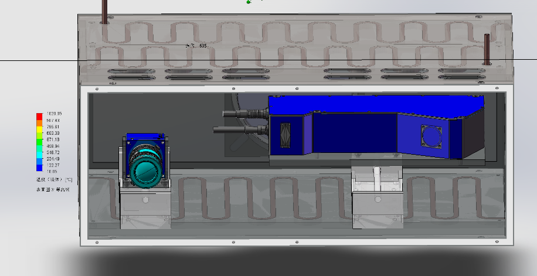
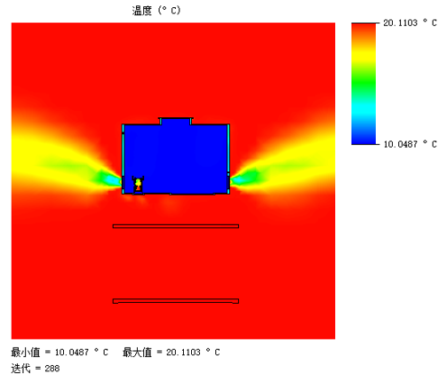
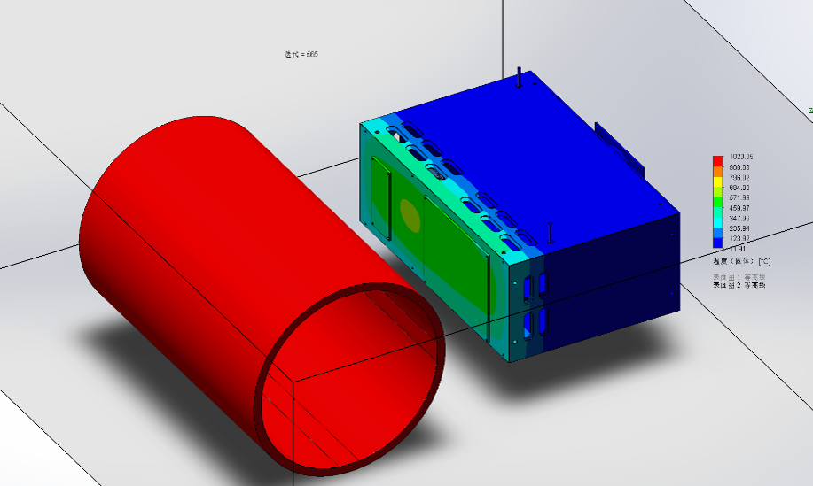
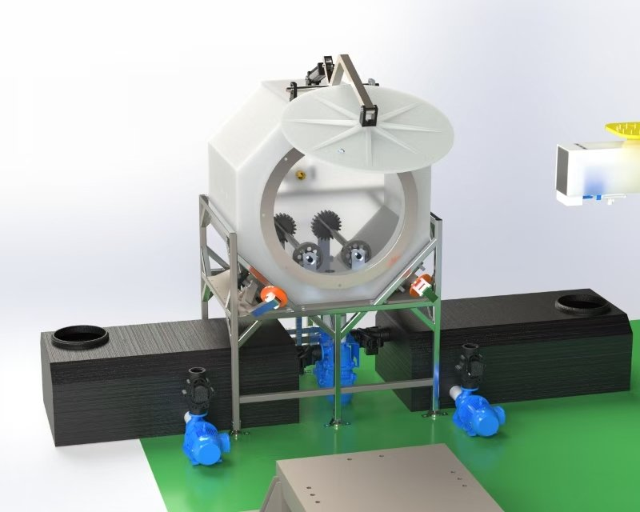
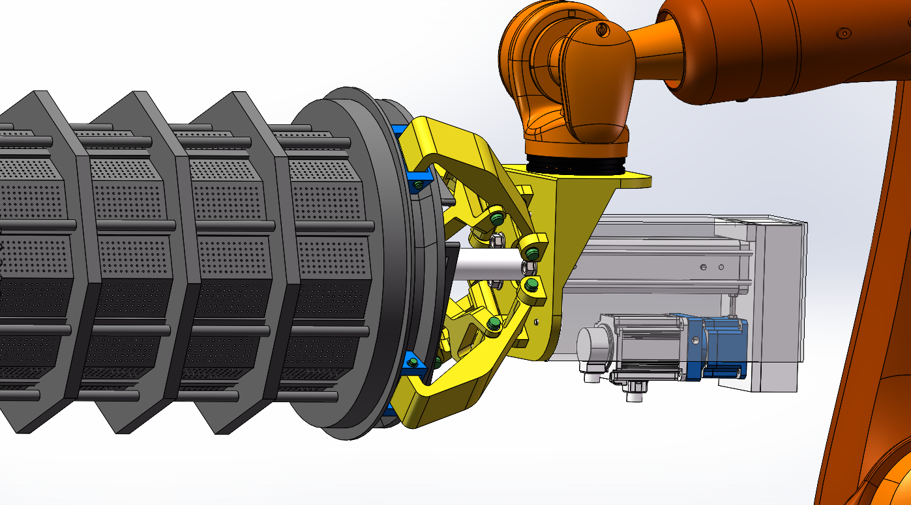
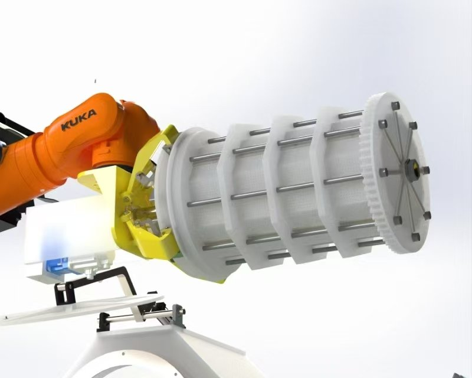
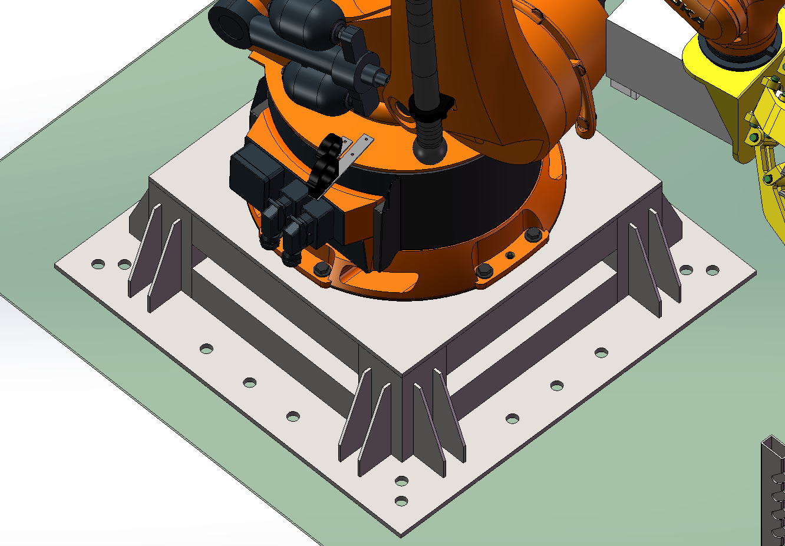

谢天艺
机械结构设计 / 仿真工程师（CAE）
机械工程硕士 · 太原理工大学（2026.06）|
现职：航空液压作动器结构设计与仿真|
邮箱：2306711103@qq.com
机械工程硕士，方向为物理场静/动仿真、机械与结构设计、工业与人工智能融合应用。
做过 3 个完整项目：高温钢管表面缺陷检测平台（热-流耦合与水冷设计）、封闭式滚动电镀成套装备（结构设计与仿真校核）、
不锈钢冷轧板带力学性能机理与数据融合预测（硕士学位论文，企业委托课题）。
擅长把仿真结论落成结构改进，并把结论与试验/实测对标。
技能矩阵
| 方向 | 工具 / 方法 | 典型应用 |
|---|
| 结构静力学仿真 | ANSYS Mechanical（四面体为主 MultiZone 网格） | 强度、刚度、变形校核；面向轻量化的结构优化 |
| 流体与热仿真 | ANSYS Fluent、FloEFD | 流场排查、共轭传热（CHT）、热-流耦合 |
| 动力学与断裂仿真 | Abaqus | 拉伸断裂过程复现、材料机理参数标定 |
| 三维建模与工程制图 | CATIA、SolidWorks、AutoCAD | 整机/部件结构设计、装配建模、工程图纸、BOM 与标准件选型 |
| 材料本构建模 | Hall-Petch、Swift-Voce 分段本构 | 真应力-真应变曲线表征与试验对标 |
| 机理与数据融合 | Python（XGBoost、随机森林、Optuna） | 工艺参数敏感性分析、力学性能预测 |
| 工程工具开发 | Python、PySide2 / Qt | 数据分析与预测软件、仿真流程自动化 |
项目一 · 高温钢管表面缺陷检测平台
600℃ 钢管在线检测：热-流耦合仿真与隔热/冷却结构设计
校内课题 · 太原理工大学 ｜ 2025.03 – 2025.11 ｜ 角色：仿真分析与结构设计
FloEFD稳态共轭传热 CHT辐射换热
铝板嵌铜管水冷工业空调送风网格无关性验证
问题与判据
面向挤压钢管产线，需要在挤压成型初期（钢管表面约 600℃）对 R100–250mm 钢管做实时全角度表面缺陷检测。
检测盒内装有工业相机与线激光传感器，二者工作温度上限为 +70℃。设计目标是把器件温度控制在器件承受上限以下，
同时保证检测视野不被遮挡。环境温度 20℃，检测盒壳体采用铝板镶嵌弯折铜管的水冷结构，
盒体后部大圆孔接入工业空调（送风 10℃）。
建模与求解
- 用 FloEFD 建立稳态共轭传热模型：固体域包含盒体铝板、水冷铜管盘管、工业相机、线激光传感器与隔热材料；流体域含盒内空气与外部环境。
- 边界条件：钢管 600℃（辐射源）、环境 20℃、空调送风 10℃、壳体水冷回路。
- 完成 1/10、1/5、原网格三档网格无关性验证，确认结果对网格不敏感后再用于结构取舍。
结果与设计改进
- 温度场仿真发现：盒体为工业相机与传感器开设的检测窗口面积过大、热辐射进入量过高。
- 改进方案：在保证检测视野不受影响的前提下缩小窗口尺寸，并把原来的单一窗口改为工业相机、传感器各设独立窗口。
- 风冷/水冷结构设计：箱体四个侧面采用铝板镶嵌弯折铜管、铜管焊接组成整体循环回路；箱体正面为检测视窗面，背面开设线孔与风冷接口，风冷口位于背部中心并采用与 12mm 风扇一致的螺丝布局，可通过软管与压缩机连接。
- 依据仿真结果校核并优化隔热与冷却结构，确保关键部件工作温度低于器件承受上限 +70℃；产品样机已落地。

图 1 检测盒剖切视图。可看到铝板镶嵌的铜管盘管走向、盒内工业相机与传感器布局；
色标为固体域温度分布，蓝色区域为被冷却的壳体与器件，暖色区域为受热部位。

图 2 温度切面图。检测盒横截面处于空调送风温度附近（约 10℃），
两侧为从检测窗口向外泄漏的冷气羽流，背景为 20℃ 环境空气。

图 3 整体装配温度场。钢管为高温热源，检测盒温度显著低于钢管；
盒体后部大圆孔为工业空调接口。
流动与热羽流（动画）
动画 1 温度等值面视图：钢管外包裹的等温面反映其对周边空气的加热范围。
动画 2 流线与迹线视图（按温度着色）：钢管上方形成上升热羽流，
检测窗口向外流出低温气流覆盖光学通道。
待补充的证据（见仓库 README）：网格截图与三档网格无关性对比表、残差与监控点收敛曲线、
相机/传感器/窗口等关键点的温度数值表、以及空调失效或水冷减半等保守工况对比。
项目二 · 封闭式滚动电镀成套装备
电镀箱、内筒与上下料机械爪：结构设计与仿真校核
校内课题 · 太原理工大学 ｜ 2023.10 – 2024.08 ｜ 角色：结构设计、标准件选型与校核
CATIA机械结构设计ANSYS Mechanical
Abaqus强度/刚度校核热分析
标准件选型
工艺与总体方案
- 把原有「开放式 + 多重溶液浸泡」改为「封闭式电镀箱 + 溶液工序控制 + 滚动式动态电镀」，
电镀均匀性提高 25%、单件平均缩短 18min。
- 完成机架、箱体主结构与机械传动设计，含箱体布局、传动连接、安装接口及密封结构，输出三维模型、工程图纸及 BOM。
关键结构设计
- 上下料机械爪：设计安装于机械臂上的四爪抓取装置，将内筒从外部吊装放入外筒；
由大推力气缸（4.4 kN）驱动，经 Y 形中间拉动组件将推力一分为四传递至四只实心金属抓指；
四爪斜 45° 交叉分布，避免起吊载荷过度集中在下方唯一机械臂上；气缸与机械臂连接座之间以直角焊接支架过渡，使推杆只承受轴向压力。
- 内筒抓取配合与抗弯加强：设计内筒端部的环形双斜面楔槽抓取环（与机械爪楔块互补），
夹紧力经双斜面转化为轴向分力实现内筒轴向自定位；针对抓取时施力点集中于内筒一端、筒身弯矩过大的问题，
设计环形阵列八根贯穿筒身的抗弯钢筋与三组保持架，将弯矩由筒身转移至钢筋，避免夹持时筒身变形或破裂。
- 标准件选型与校核：完成减速电机、保护圈、轴承、密封圈等选型与校核，依据传动负载、转速、扭矩、寿命、耐腐蚀及耐温要求确定规格。
仿真校核
- 电镀箱外箱体应力、变形与刚度校核，据此将结构改为桁架形式。
- 机械爪夹臂本体、楔块及根部铰接销轴、机械臂连接座螺栓组强度校核。
- 内筒夹持失效校核：夹持力过大导致的局部压溃与径向夹持力不足两类失效；分析夹爪靠近端面夹取时内筒整体弯矩与变形。
- 电镀箱电热反应热分析（电镀发热 / 溶液换热 / 环境散热 → 温度分布），为选材、密封与散热设计提供依据。
- 参与设备装配、调试与工艺验证，配合解决密封、传动及运行稳定性问题；样机已落地。

图 1 成套装备总体布局：封闭式电镀箱（含大直径回转开口）与内筒、上下料机械爪与机械臂、
溶液槽体及泵阀管路、不锈钢机架平台。

图 2 上下料机械爪与内筒端部的配合：四爪抓指由大推力气缸经 Y 形中间拉动组件驱动，
气缸与机械臂连接座之间以直角焊接支架过渡，使推杆只承受轴向压力。

图 3 内筒抗弯加强结构：环形阵列八根贯穿筒身的抗弯钢筋与三组保持架，
把夹持时集中于筒身一端的弯矩转移至钢筋，避免筒身变形或破裂。

图 4 机械臂底座安装平台：底座板 + 对称布置的加劲肋 + 螺栓组，
用于把机械臂与抓取载荷传入机架平台。
上下料动作动画
动画 1 上下料流程动画（41 秒）：机械臂带动自研四爪机械爪抓取内筒，
完成从取放到入箱的动作序列。
项目三 · 不锈钢板带力学性能预测（硕士学位论文）
机理与数据融合的冷轧板带力学性能预测方法及操作软件
企业委托课题 · 太原理工大学 ｜ 2024.12 – 2026.05 ｜ 角色：机理建模、算法实现与软件交付
Sellars / Burke-TurnbullHall-PetchSwift-Voce
试验对标参数敏感性分析XGBoost + 随机森林
PySide2 / Qt
数据集与机理建模
- 构建 201 不锈钢冷轧连退产线「工艺-组织-性能」数据集：40 余项工艺参数（各机架压下率 / 轧制力 / 轧速 / 张力 / 板厚等）
+ EBSD 微观组织（平均晶粒尺寸 13.11–90.85μm）+ 拉伸试验（GB/T 228.1-2021）。
- 建立 Sellars + Burke-Turnbull 晶粒尺寸演化唯象模型（拟合优度 R²=0.89）与 Hall-Petch + Swift-Voce 真应力-真应变分段本构模型；
屈服强度计算结果与实测对标 MAE 23.82 MPa、RMSE 27.75 MPa，完成建模-验证闭环。
工艺参数敏感性与预测建模
- 完成 40 余项工艺参数的相关性分析与参数敏感性排序，识别终轧压下率为影响力学性能的核心变量。
- 以 XGBoost + 随机森林融合模型实现力学性能预测，屈服强度 / 极限拉伸强度 / 延伸率 R² 达 0.941 / 0.913 / 0.922，
优于单一 XGBoost（0.915 / 0.845 / 0.850）、随机森林及未加机理过滤的半监督方案。
工程工具开发
- 基于 PySide2 + Qt Designer 开发数据分析与预测软件：数据读取与分析（多维趋势 / 频率 / 钢种分布 / 皮尔逊热力图）、
模型配置与训练（LOF 清洗、参数配置、训练监控）、预测与导出（Bootstrap 置信区间、批量预测可视化）三大模块。
- 支持产线无需专家介入即可自主完成新钢种的学习-评估-预测，已交付使用。
联系方式
邮箱：2306711103@qq.com ·
求职意向：机械结构设计 / 仿真（CAE）工程师 · 期望城市：太原 / 西安 / 北京 / 苏州